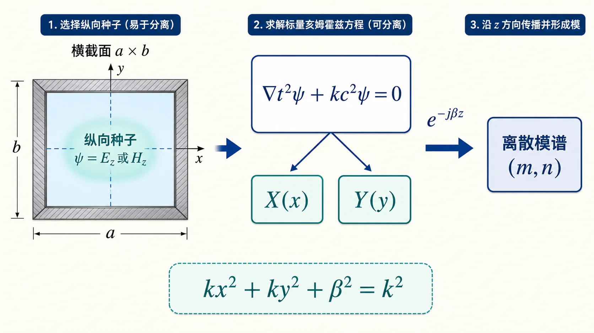

02 · 波动方程与分离变量（纵向分量）§
本节你要能回答什么§
- 无源区时谐场下，电场满足的 Helmholtz 方程怎么写？
- 为什么常先求 纵向分量 $\psi\in\{E_z,H_z\}$，再推横向场？
- 分离变量后得到的 $k_x^2+k_y^2+k_z^2=k^2$（或把 $k_z$ 换成 $\beta$）在矩形波导里如何变成离散模谱？
直觉：先标量、后矢量§
均匀无源区域里，每个直角分量都满足同一标量 Helmholtz 方程。波导问题里再假设沿 $z$ 行波，把 $\partial_z^2\to -\beta^2$，就把三维问题拆成「横截面本征问题 + 轴向传播」。
这一步的用处是降维：直接求六个场分量很乱，先抓住 $E_z$ 或 $H_z$ 这个“种子分量”，把横截面形状解出来，再用 Maxwell 旋度方程把其他横向分量带出来。

可以把 $\psi$ 想成一个“种子场”。横截面边界先决定它能长成哪些形状；沿 $z$ 的 $\mathrm e^{-\mathrm j\beta z}$ 只负责把这个形状向前推进。
定义与符号表§
无源、时谐（$\partial/\partial t\to \mathrm j\omega$）下，电场满足
$$ \nabla^2 \boldsymbol E + k^2 \boldsymbol E = \boldsymbol 0,\qquad k^2=\omega^2\mu\varepsilon. $$
在直角坐标中，$E_x,E_y,E_z$ 各自满足
$$ \nabla^2 \psi + k^2\psi = 0. $$
取纵向分量 $\psi$ 代表 $E_z$ 或 $H_z$，设 $\psi(x,y,z)=X(x)Y(y)Z(z)$，代入并除以 $\psi$：
$$ \frac{X''}{X}+\frac{Y''}{Y}+\frac{Z''}{Z}+k^2=0. $$
引入分离常数，令
$$ \frac{X''}{X}=-k_x^2,\quad \frac{Y''}{Y}=-k_y^2,\quad \frac{Z''}{Z}=-k_z^2, $$
则
$$ k_x^2+k_y^2+k_z^2=k^2. $$
对沿 $+z$ 导行的行波，常写 $Z(z)\propto \mathrm e^{-\mathrm j\beta z}$，于是 $Z''/Z=-\beta^2$，色散关系为
$$ k_x^2+k_y^2+\beta^2=k^2. $$
矩形波导（预告下一节）：理想导体壁与 $E_t=0$ 等边界条件把 $k_x,k_y$ 量子化为 $m\pi/a,\,n\pi/b$ 等形式，从而得到离散 $k_{\mathrm c}=\sqrt{k_x^2+k_y^2}$。
这里的“量子化”不是量子力学专用词，只是说边界条件把连续可选的 $k_x,k_y$ 变成一串离散值。就像一根固定长度的弦只能容纳整数个半波。
推导步骤（纲要）§
- 写出 $\nabla^2\psi+k^2\psi=0$。
- 设 $\psi=XYZ$，得到分离常数关系 $k_x^2+k_y^2+k_z^2=k^2$。
- 用行波假设固定 $Z$ 分支，把 $k_z$ 换成 $\beta$。
- 在矩形域用边界条件确定 $k_x,k_y$ 与本征函数（$\sin/\cos$ 组合）。
与截止、色散、模式指标的挂钩§
- $k=\omega\sqrt{\mu\varepsilon}$ 由工作频率与填充决定；$k_{\mathrm c}$ 由几何与 $(m,n)$ 决定；二者通过 $k^2=k_{\mathrm c}^2+\beta^2$ 约束 $\beta$。
- TE 常先解 $H_z$；TM 常先解 $E_z$（见 04）。
易错点§
- 混淆 $k$ 与 $k_{\mathrm c}$：前者是介质波数；后者是横截面本征问题给出的截止波数。
- 忘记行波假设：没有 $\partial_z\to -\mathrm j\beta$，就无法把三维 Laplacian 拆成「横向 $+$ 纵向」的标准形式。
- 分离变量常数符号：习惯取 $k_x^2,k_y^2$ 为正（振荡解），具体用 $\sin$ 还是 $\cos$ 由边界决定。
Mini 自检题§
Q1：写出 $k_x^2+k_y^2+\beta^2=k^2$ 时，若 $k<k_{\mathrm c}=\sqrt{k_x^2+k_y^2}$，$\beta$ 实部还是虚部？
提示：$\beta=\sqrt{k^2-k_{\mathrm c}^2}$ 为虚数，场沿 $z$ 衰减，模被截止。
Q2：Helmholtz 方程对 $\boldsymbol E$ 是矢量式，为何可单独对 $E_z$ 写标量式？
提示：均匀各向同性介质、直角坐标下，$\nabla^2$ 对每个直角分量作用形式相同且无耦合。